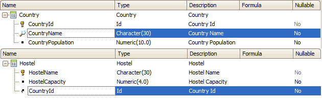
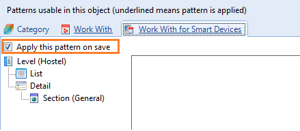
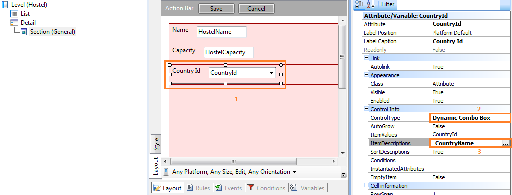
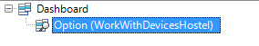
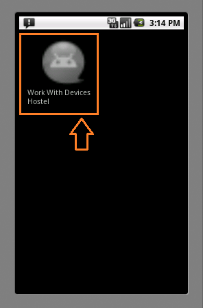
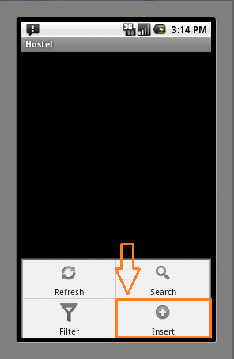
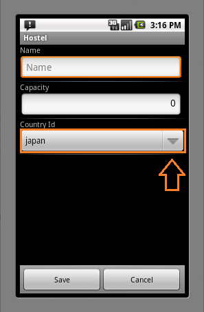
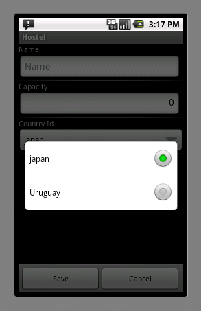

Dynamic Combo Box is a control applied for win, web and Native Mobile applications. It is used to relate two different Transactions.
In this tutorial, you will learn how to use a dynamic combo box in Native Mobile.
| AutoGrow | If this property is true then the field will adjust the length of the attribute. |
| Data Source From | To indicate where the data is loaded from (a table, a Data Provider or from fixed values) |
| ItemValues | When selecting an item from a dynamic combo box, this property specifies the value that will be used in this field. |
| ItemDescriptions | Specify the attribute values that will be listed by the dynamic Combobox. |
| SortDescriptions | If this property is true then the descriptions will be sorted. |
| Conditions | You can set conditions on the list that will be deployed (it is unavailable until RC). |
| InstantiatedAttribute | Specifies a list of attribute names whose values will be assumed instantiated when navigation is being calculated. |
| EmptyItem | It enables to set an empty option for this field. |
For this example, you will create two Transactions: Country and Hostel. These Transactions are related 1 to N, a Hostel belongs to one Country and a Country has many Hostels.

You will have to apply the Work With for Smart Devices object (WWSD) to Hostel Transaction (for further information, see Applying Work With for Smart Devices Pattern).

To set Dynamic Combo Box to CountryId you must set the Control Type property for the WWSD.
You will set the properties like the image shows:

Item Value: CountryId
Item Descriptions: CountryName
You want to see the names of the countries but the value that you need to store is CountryId. Finally, create a Menu for Smart Devices object and add the item "WorkWithDevicesHostel"

Done! You have your application ready to deploy on the device.




| Backlinks | |
| Dynamic Combo Box | HowTo: Using the Data Source From property |
| Toc:Native Mobile Applications Development | |
| Sort Descriptions Property |